전기기사 (2020-08-22 기출문제)
1과목: 전기자기학
1. 분극의 세기 P, 전계 E, 전속밀도 D의 관계를 나타낸 것으로 옳은 것은? (단, ε0는 진공의 유전율이고, εr은 유전체의 비유전율이고, ε은 유전체의 유전율이다.)
- P = ε0(ε+1)E
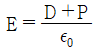
- P = D-ε0E
- ε0 = D-E
(정답률: 81%)

2. 그림과 같은 직사각형의 평면 코일이
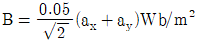
인 자계에 위치하고 있다. 이 코일에 흐르는 전류가 5A일 때 z축에 있는 코일에서의 토크는 약 몇 N·m 인가?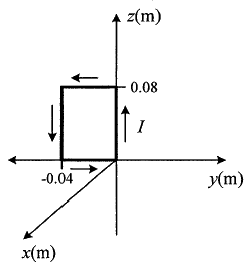
- 2.66×10-4ax
- 5.66×10-4ax
- 2.66×10-4az
- 5.66×10-4az
(정답률: 56%)
3. 내부 장치 또는 공간을 물질로 포위시켜 외부 자계의 영향을 차폐시키는 방식을 자기차폐라 한다. 다음 중 자기차폐에 가장 적합한 것은?
- 비투자율이 1 보다 작은 역자성체
- 강자성체 중에서 비투자율이 큰 물질
- 강자성체 중에서 비투자율이 작은 물질
- 비투자율에 관계없이 물질의 두께에만 관계되므로 되도록이면 두꺼운 물질
(정답률: 81%)
4. 주파수가 100MHz 일 때 구리의 표피두께(skin depth)는 약 몇 mm 인가? (단, 구리의 도전율은 5.9×107 ℧/m 이고, 비투자율은 0.99 이다.)
- 3.3 × 10-2
- 6.6 × 10-2
- 3.3 × 10-3
- 6.6 × 10-3
(정답률: 62%)
5. 압전기 현상에서 전기 분극이 기계적 응력에 수직한 방향으로 발생하는 현상은?
- 종효과
- 횡효과
- 역효과
- 직접효과
(정답률: 74%)
6. 구리의 고유저항은 20℃에서 1.69×10-8 Ω·m 이고 온도계수는 0.00393 이다. 단면적이 2mm2 이고 100m 인 구리선의 저항값은 40℃에서 약 몇 Ω 인가?
- 0.91 × 10-3
- 1.89 × 10-3
- 0.91
- 1.89
(정답률: 52%)
7. 전위경도 V와 전계 E의 관계식은?
- E = grad V
- E = div V
- E = -grad V
- E = -div V
(정답률: 78%)
8. 정전계에서 도체에 정(+)의 전하를 주었을 때의 설명으로 틀린 것은?
- 도체 표면의 곡률 반지름이 작은 곳에 전하가 많이 분포한다.
- 도체 외측의 표면에만 전하가 분포한다.
- 도체 표면에서 수직으로 전기력선이 출입한다.
- 도체 내에 있는 공동면에도 전하가 골고루 분포한다.
(정답률: 65%)
9. 평행 도선에 같은 크기의 왕복 전류가 흐를 때 두 도선 사이에 작용하는 힘에 대한 설명으로 옳은 것은?
- 흡인력이다.
- 전류의 제곱에 비례한다.
- 주위 매질의 투자율에 반비례한다.
- 두 도선 사이 간격의 제곱에 반비례한다.
(정답률: 58%)
10. 비유전율 3, 비투자율 3인 매질에서 전자기파의 진행속도 v(m/s)와 진공에서의 속도 v0(m/s)의 관계는?
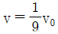
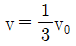
- v = 3v0
- v = 9v0
(정답률: 68%)
11. 대지의 고유저항이 ρ(Ω·m)일 때 반지름이 a(m)인 그림과 같은 반구 접지극의 접지저항(Ω)은?
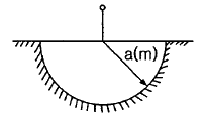
- ρ/4πa
- ρ/2πa
- 2πρ/a
- 2πρa
(정답률: 70%)
12. 공기 중에서 2V/m의 전계의 세기에 의한 변위전류밀도의 크기를 2A/m2으로 흐르게 하려면 전계의 주파수는 약 몇 MHz가 되어야 하는가?
- 9000
- 18000
- 36000
- 72000
(정답률: 48%)
13. 2장의 무한 평판 도체를 4cm의 간격으로 놓은 후 평판 도체 간에 일정한 전계를 인가하였더니 평판 도체 표면에 2μC/m2의 전하밀도가 생겼다. 이 때 평행 도체 표면에 작용하는 정전응력은 약 몇 N/m2 인가?
- 0.⑤7
- 0.226
- 0.57
- 2.26
(정답률: 50%)
14. 자성체 내의 자계의 세기가 H(AT/m)이고 자속밀도가 B(Wb/m2)일 때, 자계 에너지 밀도(J/m3)는?
- HB
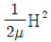
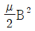
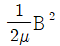
(정답률: 71%)
15. 임의의 방향으로 배열되었던 강자성체의 자구가 외부 자기장의 힘이 일정치 이상이 되는 순간에 급격히 회전하여 자기장의 방향으로 배열되고 자속밀도가 증가하는 현상을 무엇이라 하는가?
- 자기여효(magnetic aftereffect)
- 바크하우젠 효과(Barkhausen effect)
- 자기왜현상(magneto-striction effect)
- 핀치 효과(Pinch effect)
(정답률: 66%)
16. 반지름이 5mm, 길이가 15mm, 비투자율이 50인 자성체 막대에 코일을 감고 전류를 흘려서 자성체 내의 자속밀도를 50 Wb/m2으로 하였을 때 자성체 내에서의 자계의 세기는 몇 A/m 인가?
- 107/π
- 107/2π
- 107/4π
- 107/8π
(정답률: 62%)
17. 반지름이 30cm인 원판 전극의 평행판 콘덴서가 있다. 전극의 간격이 0.1cm 이며 전극 사이 유전체의 비유전율이 4.0 이라 한다. 이 콘덴서의 정전용량은 약 몇 μF 인가?
- 0.01
- 0.02
- 0.03
- 0.04
(정답률: 54%)
18. 한 변의 길이가 l(m)인 정사각형 도체 회로에 전류 I(A)를 흘릴 때 회로의 중심점에서의 자계의 세기는 몇 AT/m 인가?
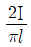
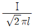
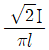
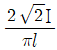
(정답률: 80%)
19. 정전용량이 각각 C1=1μF, C2=2μF인 도체에 전하 Q1=-5μC, Q2=2μC을 각각 주고 각 도체를 가는 철사로 연결하였을 때 C1에서 C2로 이동하는 전하 Q(μC)는?
- -4
- -3.5
- -3
- -1.5
(정답률: 39%)
20. 정전용량이 0.03μF인 평행판 공기 콘덴서의 두 극판 사이에 절반 두께의 비유전율 10인 유리판을 극판과 평행하게 넣었다면 이 콘덴서의 정전용량은 약 몇 μF이 되는가?
- 1.83
- 18.3
- 0.⑤5
- 0.55
(정답률: 59%)
2과목: 전력공학
21. 3상 전원에 접속된 △결선의 커패시터를 Y결선으로 바꾸면 진상 용량 QY(kVA)는? (단, Q△는 △결선된 커패시터의 진상 용량이고, QY는 Y결선된 커패시터의 진상 용량이다.)
- QY = √3 Q△
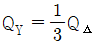
- QY = 3 Q△
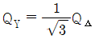
(정답률: 61%)
22. 교류 배전선로에서 전압강하 계산식은 Vd = k(Rcosθ+Xsinθ)I로 표현된다. 3상 3선식 배전선로인 경우에 k는?
- √3
- √2
- 3
- 2
(정답률: 76%)
23. 송전선에서 뇌격에 대한 차폐 등을 위해 가선하는 가공지선에 대한 설명으로 옳은 것은?
- 차폐각은 보통 15~30°정도로 하고 있다.
- 차폐각이 클수록 벼락에 대한 차폐효과가 크다.
- 가공지선을 2선으로 하면 차폐각이 적어진다.
- 가공지선으로는 연동선을 주로 사용한다.
(정답률: 57%)
24. 배전선의 전력손실 경감 대책이 아닌 것은?
- 다중접지 방식을 채용한다.
- 역률을 개선한다.
- 배전 전압을 높인다.
- 부하의 불평형을 방지한다.
(정답률: 55%)
25. 그림과 같은 이상 변압기에서 2차 측에 5Ω의 저항부하를 연결하였을 때 1차 측에 흐르는 전류(I)는 약 몇 A 인가?
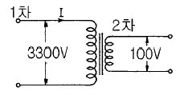
- 0.6
- 1.8
- 20
- 660
(정답률: 57%)
26. 전압과 유효전력이 일정할 경우 부하 역률이 70%인 선로에서의 저항 손실(P70%)은 역률이 90%인 선로에서의 저항 손실(P90%)과 비교하면 약 얼마인가?
- P70% = 0.6P90%
- P70% = 1.7P90%
- P70% = 0.3P90%
- P70% = 2.7P90%
(정답률: 59%)
27. 3상 3선식 송전선에서 L을 작용 인턱턴스라 하고, Le 및 Lm은 대지를 귀로로 하는 1선의 자기 인덕턴스 및 상호 인덕턴스라고 할 때 이들 사이의 관계식은?
- L = Lm - Le
- L = Le - Lm
- L = Lm + Le
- L = Lm/Le
(정답률: 47%)
28. 표피효과에 대한 설명으로 옳은 것은?
- 표피효과는 주파수에 비례한다.
- 표피효과는 전선의 단면적에 반비례한다.
- 표피효과는 전선의 비투자율에 반비례한다.
- 표피효과는 전선의 도전율에 반비례한다.
(정답률: 71%)
29. 배전선로의 전압을 3kV에서 6kV로 승압하면 전압강하율(δ)은 어떻게 되는가? (단, δ3kV는 전압이 3kV일 때 전압강하율이고, δ6kV는 전압이 6kV일 때 전압강하율이고, 부하는 일정하다고 한다.)
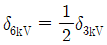
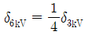
- δ6kV = 2δ3kV
- δ6kV = 4δ3kV
(정답률: 46%)
30. 계통의 안정도 증진대책이 아닌 것은?
- 발전기나 변압기의 리액턴스를 작게 한다.
- 선로의 회선수를 감소시킨다.
- 중간 조상 방식을 채용한다.
- 고속도 재폐로 방식을 채용한다.
(정답률: 67%)
31. 1상의 대지 정전용량이 0.5㎌, 주파수가 60Hz인 3상 송전선이 있다. 이 선로에 소호리액터를 설치한다면, 소호리액터의 공진 리액턴스는 약 몇 Ω이면 되는가?
- 970
- 1370
- 1770
- 3570
(정답률: 54%)
32. 배전선로의 고장 또는 보수 점검 시 정전구간을 축소하기 위하여 사용되는 것은?
- 단로기
- 컷아웃스위치
- 계자저항기
- 구분개폐기
(정답률: 59%)
33. 수전단 전력 원선도의 전력 방정식이 Pr2+(Qr+400)2=250000으로 표현되는 전력계통에서 가능한 최대로 공급할 수 있는 부하전력(Pr)과 이때 전압을 일정하게 유지하는데 필요한 무효전력(Qr)은 각각 얼마인가?
- Pr = 500, Qr = -400
- Pr = 400, Qr = 500
- Pr = 300, Qr = 100
- Pr = 200, Qr = -300
(정답률: 74%)
34. 수전용 변전설비의 1차측 차단기의 차단용량은 주로 어느 것에 의하여 정해지는가?
- 수전 계약용량
- 부하설비의 단락용량
- 공급측 전원의 단락용량
- 수전전력의 역률과 부하율
(정답률: 60%)
35. 프란시스 수차의 특유속도(m·kW)의 한계를 나타내는 식은? (단, H(m)는 유효낙차이다.)
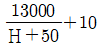
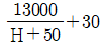
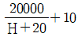
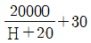
(정답률: 46%)
36. 정격전압 6600V, Y결선, 3상 발전기의 중성점을 1선 지락 시 지락전류를 100A로 제한하는 저항기로 접지하려고 한다. 저항기의 저항 값은 약 몇 Ω 인가?
- 44
- 41
- 38
- 35
(정답률: 67%)
37. 송전 철탑에서 역섬락을 방지하기 위한 대책은?
- 가공지선의 설치
- 탑각 접지저항의 감소
- 전력선의 연가
- 아크혼의 설치
(정답률: 63%)
38. 조속기의 폐쇄시간이 짧을수록 나타나는 현상으로 옳은 것은?
- 수격작용은 작아진다.
- 발전기의 전압 상승률은 커진다.
- 수차의 속도 변동률은 작아진다.
- 수압관 내의 수압 상승률은 작아진다.
(정답률: 60%)
39. 주변압기 등에서 발생하는 제5고조파를 줄이는 방법으로 옳은 것은?
- 전력용 콘덴서에 직렬리액터를 연결한다.
- 변압기 2차측에 분로리액터를 연결한다.
- 모선에 방전코일을 연결한다.
- 모선에 공심 리액터를 연결한다.
(정답률: 71%)
40. 복도체에서 2본의 전선이 서로 충돌하는 것을 방지하기 위하여 2본의 전선 사이에 적당한 간격을 두어 설치하는 것은?
- 아모로드
- 댐퍼
- 아킹혼
- 스페이서
(정답률: 72%)
3과목: 전기기기
41. 정격전압 120V, 60Hz인 변압기의 무부하 입력 80W, 무부하 전류 1.4A 이다. 이 변압기의 여자 리액턴스는 약 몇 Ω 인가?
- 97.6
- 103.7
- 124.7
- 180
(정답률: 33%)
42. 서보모터의 특징에 대한 설명으로 틀린 것은?
- 발생토크는 입력신호에 비례하고, 그 비가 클 것
- 직류 서보모터에 비하여 교류 서보모터의 시동 토크가 매우 클 것
- 시동 토크는 크나 회전부의 관성모멘트가 작고, 전기력 시정수가 짧을 것
- 빈번한 시동, 정지, 역전 등의 가혹한 상태에 견디도록 견고하고, 큰 돌입전류에 견딜 것
(정답률: 63%)
43. 3상 변압기 2차측의 EW 상만을 반대로 하고, Y-Y 결선을 한 경우, 2차 상전압이 EU = 70V, EV = 70V, EW = 70V 라면 2차 선간전압은 약 몇 V 인가?
- VU-V = 121.2V, VV-W = 70V, VW-U = 70V
- VU-V = 121.2V, VV-W = 210V, VW-U = 70V
- VU-V = 121.2V, VV-W = 121.2V, VW-U = 70V
- VU-V = 121.2V, VV-W = 121.2V, VW-U = 121.2V
(정답률: 53%)
44. 극수 8, 중권 직류기의 전기자 총 도체 수 960, 매극 자속 0.04Wb, 회전수 400 rpm 이라면 유기기전력은 몇 V 인가?
- 256
- 327
- 425
- 625
(정답률: 67%)
45. 3상 유도전동기에서 2차측 저항을 2배로 하면 그 최대토크는 어떻게 변하는가?
- 2배로 커진다.
- 3배로 커진다.
- 변하지 않는다.
- √2배로 커진다.
(정답률: 71%)
46. 동기전동기에 일정한 부하를 걸고 계자전류를 0A에서부터 계속 증가시킬 때 관련 설명으로 옳은 것은? (단, Ia는 전기자전류이다.)
- Ia는 증가하다가 감소한다.
- Ia가 최소일 때 역률이 1 이다.
- Ia가 감소상태일 때 앞선 역률이다.
- Ia가 증가상태일 때 뒤진 역률이다.
(정답률: 62%)
47. 3kVA, 3000/200V의 변압기의 단락시험에서 임피던스전압 120V, 동손 150W라 하면 %저항 강하는 몇 % 인가?
- 1
- 3
- 5
- 7
(정답률: 49%)
48. 정격출력 50kW, 4극 220V, 60Hz인 3상 유도전동기가 전부하 슬립 0.04, 효율 90%로 운전되고 있을 때 다음 중 틀린 것은?
- 2차 효율 = 92%
- 1차 입력 = 55.56 kW
- 회전자 동손 = 2.08 kW
- 회전자 입력 = 52.08 kW
(정답률: 59%)
49. 단상 유도전동기를 2전동기설로 설명하는 경우 정방향 회전자계의 슬립이 0.2이면, 역방향 회전자계의 슬립은 얼마인가?
- 0.2
- 0.8
- 1.8
- 2.0
(정답률: 62%)
50. 직류 가동복권발전기를 전동기로 사용하면 어느 전동기가 되는가?
- 직류 직권전동기
- 직류 분권전동기
- 직류 가동복권전동기
- 직류 차동복권전동기
(정답률: 58%)
51. 동기발전기를 병렬운전 하는데 필요하지 않은 조건은?
- 기전력의 용량이 같을 것
- 기전력의 파형이 같을 것
- 기전력의 크기가 같을 것
- 기전력의 주파수가 같을 것
(정답률: 73%)
52. IGBT(Insulated Gate Bipolar Transistor)에 대한 설명으로 틀린 것은?
- MOSFET와 같이 전압제어 소자이다.
- GTO 사이리스터와 같이 역방향 전압저지 특성을 갖는다.
- 게이트와 에미터 사이의 입력 임피던스가 매우 낮아 BJT 보다 구동하기 쉽다.
- BJT처럼 on-drop 이 전류에 관계없이 낮고 거의 일정하며, MOSFET보다 훨씬 큰 전류를 흘릴 수 있다.
(정답률: 45%)
53. 유도전동기에서 공급 전압의 크기가 일정하고 전원 주파수만 낮아질 때 일어나는 현상으로 옳은 것은?
- 철손이 감소한다.
- 온도상승이 커진다.
- 여자전류가 감소한다.
- 회전속도가 증가한다.
(정답률: 45%)
54. 용접용으로 사용되는 직류발전기의 특성 중에서 가장 중요한 것은?
- 과부하에 견딜 것
- 전압변동률이 적을 것
- 경부하일 때 효율이 좋을 것
- 전류에 대한 전압특성이 수하특성일 것
(정답률: 56%)
55. 동기발전기에 설치된 제동권선의 효과로 틀린 것은?
- 난조 방지
- 과부하 내량의 증대
- 송전선의 불평형 단락 시 이상전압 방지
- 불평형 부하 시의 교류, 전압 파형의 개선
(정답률: 55%)
56. 3300/220V 변압기 A, B의 정격용량이 각각 400kVA, 300kVA이고, %임피던스 강하가 각각 2.4%, 3.6% 일 때 그 2대의 변압기에 걸 수 있는 합성부하용량은 몇 kVA 인가?
- 550
- 600
- 650
- 700
(정답률: 39%)
57. 동작모드가 그림과 같이 나타나는 혼합브리지는?
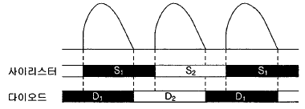
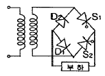
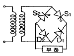
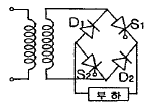
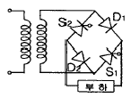
(정답률: 51%)
58. 동기기의 전기자 저항을 r, 전기자 반작용 리액턴스를 Xa, 누설 리액턴스를 Xℓ라고 하면 동기임피던스를 표시하는 식은?
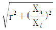
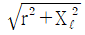
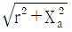
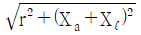
(정답률: 72%)
59. 단상 유도전동기에 대한 설명으로 틀린 것은?
- 반발 기동형 : 직류전동기와 같이 정류자와 브러시를 이용하여 기동한다.
- 분상 기동형 : 별도의 보조권선을 사용하여 회전자계를 발생시켜 기동한다.
- 커패시터 기동형 : 기동전류에 비해 기동토크가 크지만, 커패시터를 설치해야 한다.
- 반발 유도형 : 기동 시 농형권선과 반발전동기의 회전자 권선을 함께 이용하나 운전 중에는 농형권선만을 이용한다.
(정답률: 59%)
60. 직류전동기의 속도제어법이 아닌 것은?
- 계자 제어법
- 전력 제어법
- 전압 제어법
- 저항 제어법
(정답률: 62%)
4과목: 회로이론 및 제어공학
61. 그림과 같이 피드백제어 시스템에서 입력이 단위계단함수일 때 정상상태 오차상수인 위치상수(Kp)는?
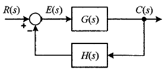
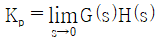
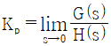
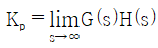
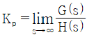
(정답률: 53%)
62. 적분 시간 4sec, 비례 감도가 4인 비례적분 동작을 하는 제어 요소에 동작신호 z(t) = 2t를 주었을 때 이 제어 요소의 조작량은? (단, 조작량의 초기 값은 0 이다.)
- t2 + 8t
- t2 + 2t
- t2 - 8t
- t2 - 2t
(정답률: 53%)
63. 시간함수 f(t) = sinωt의 z변환은? (단, T는 샘플링 주기이다.)
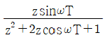
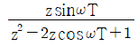
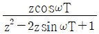
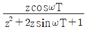
(정답률: 40%)
64. 다음과 같은 신호흐름선도에서 C(s)/R(s)의 값은?
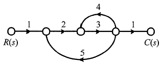
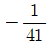
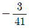
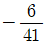
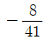
(정답률: 73%)
65. Routh-Hurwitz 방법으로 특성방정식이 s4+2s3+s2+4s+2=0인 시스템의 안정도를 판별하면?
- 안정
- 불안정
- 임계안정
- 조건부 안정
(정답률: 58%)
66. 제어시스템의 상태방정식이
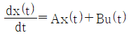
,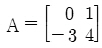
,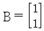
일 때, 특성방정식을 구하면?- s2-4s-3=0
- s2-4s+3=0
- s2+4s+3=0
- s2+4s-3=0
(정답률: 65%)
67. 어떤 제어시스템의 개루프 이득이
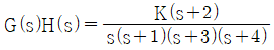
일 때 이 시스템이 가지는 근궤적의 가지(branch) 수는?- 1
- 3
- 4
- 5
(정답률: 64%)
68. 다음 회로에서 입력 전압 v1(t)에 대한 출력 전압 v2(t)의 전달함수 G(s)는?
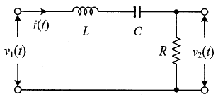
(정답률: 64%)
69. 특성방정식의 모든 근이 s평면(복소평면)의 jω축(허수축)에 있을 때 이 제어시스템의 안정도는?
- 알 수 없다.
- 안정하다.
- 불안정하다.
- 임계안정이다.
(정답률: 61%)
70. 논리식 를 간단히 하면?
- A + B
- A + A·B
(정답률: 60%)
71. 선간 전압이 Vab(V)인 3상 평형 전원에 대칭 부하 R(Ω)이 그림과 같이 접속되어 있을 때, a, b 두 상간에 접속된 전력계의 지시 값이 W(W)라면 C상 전류의 크기(A)는?
(정답률: 55%)
72. 불평형 3상 전류가 Ia = 15+j2(A), Ib = -20-j14(A), Ic = -3+j10(A)일 때, 역상분 전류 I2(A)는?
- 1.91+j6.24
- 15.74-j3.57
- -2.67-j0.67
- -8-j2
(정답률: 42%)
73. 회로에서 20Ω의 저항이 소비하는 전력은 몇 W 인가?
- 14
- 27
- 40
- 80
(정답률: 34%)
74. RC 직렬회로에서 직류전압 V(V)가 인가되었을 때, 전류 i(t)에 대한 전압 방정식(KVL)이 이다. 전류 i(t)의 라플라스 변환인 I(s)는? (단, C에는 초기 전하가 없다.)
(정답률: 50%)
75. 선간 전압이 100V 이고, 역률이 0.6인 평형 3상 부하에서 무효전력이 Q=10kvar 일 때, 선전류의 크기는 약 몇 A 인가?
- 57.7
- 72.2
- 96.2
- 125
(정답률: 46%)
76. 그림과 같은 T형 4단자 회로망에서 4단자 정수 A와 C는? (단, Z1=1/Y1, Z2=1/Y2, Z3=1/Y3)
(정답률: 57%)
77. 어떤 회로의 유효전력이 300W, 무효전력이 400var 이다. 이 회로의 복소전력의 크기(VA)는?
- 350
- 500
- 600
- 700
(정답률: 69%)
78. R=4Ω, ωL=3Ω의 직렬회로의 e=100√2 sinωt + 50√2 sin3ωt를 인가할 때 이 회로의 소비전력은 약 몇 W 인가?
- 1000
- 1414
- 1560
- 1703
(정답률: 35%)
79. 단위 길이 당 인덕턴스가 L(H/m)이고, 단위 길이 당 정전용량이 C(F/m)인 무손실 선로에서의 진행파 속도(m/s)는?
(정답률: 61%)
80. t=0에서 스위치(S)를 닫았을 때 t=0+ 에서의 i(t)는 몇 A 인가? (단, 커패시터에 초기 전하는 없다.)
- 0.1
- 0.2
- 0.4
- 1.0
(정답률: 60%)
5과목: 전기설비기술기준 및 판단기준
81. 345kV 송전선을 사람이 쉽게 들어가지 않는 산지에 시설할 때 전선의 지표상 높이는 몇 m 이상으로 하여야 하는가?
- 7.28
- 7.56
- 8.28
- 8.56
(정답률: 42%)
82. 변전소에서 오접속을 방지하기 위하여 특고압 전로의 보기 쉬운 곳에 반드시 표시해야 하는 것은?
- 상별표시
- 위험표시
- 최대전류
- 정격전압
(정답률: 59%)
83. 전력 보안 가공통신선의 시설 높이에 대한 기준으로 옳은 것은?
- 철도의 궤도를 횡단하는 경우에는 레일면상 5m 이상
- 횡단보도교 위에 시설하는 경우에는 그 노면상 3m 이상
- 도로(차도와 도로의 구별이 있는 도로는 차도) 위에 시설하는 경우에는 지표상 2m 이상
- 교통에 지장을 줄 우려가 없도록 도로(차도와 도로의 구별이 있는 도로는 차도) 위에 시설하는 경우에는 지표상 2m 까지로 감할 수 있다.
(정답률: 58%)
84. 가반형의 용접전극을 사용하는 아크 용접장치의 용접변압기의 1차측 전로의 대지전압은 몇 V 이하이어야 하는가?
- 60
- 150
- 300
- 400
(정답률: 61%)
85. 전기온상용 발열선은 그 온도가 몇 ℃를 넘지 않도록 시설하여야 하는가?
- 50
- 60
- 80
- 100
(정답률: 56%)
86. 사용전압이 154kV인 가공전선로를 제1종 특고압 보안공사로 시설할 때 사용되는 경동연선의 단면적은 몇 mm2 이상이어야 하는가?
- 52
- 100
- 150
- 200
(정답률: 53%)
87. 고압용 기계기구를 시가지에 시설할 때 지표상 몇 m 이상의 높이에 시설하고, 또한 사람이 쉽게 접촉할 우려가 없도록 하여야 하는가?
- 4.0
- 4.5
- 5.0
- 5.5
(정답률: 33%)
88. 발전기, 전동기, 조상기, 기타 회전기(회전변류기 제외)의 절연내력 시험전압은 어느 곳에 가하는가?
- 권선과 대지 사이
- 외함과 권선 사이
- 외함과 대지 사이
- 회전자와 고정자 사이
(정답률: 56%)
89. 특고압 지중전선이 지중 약전류전선 등과 접근하거나 교차하는 경우에 상호 간의 이격거리가 몇 cm 이하인 때에만 두 전선이 직접 접촉하지 아니하도록 하여야 하는가?
- 15
- 20
- 30
- 60
(정답률: 30%)
90. 고압 옥내배선의 공사방법으로 틀린 것은?
- 케이블공사
- 합성수지관공사
- 케이블 트레이공사
- 애자사용공사(건조한 장소로서 전개된 장소에 한한다.)
(정답률: 51%)
91. 조상설비 내부고장, 과전류 또는 과전압이 생긴 경우 자동적으로 차단되는 장치를 해야하는 전력용 커패시터의 최소 뱅크용량은 몇 kVA 인가?
- 10000
- 12000
- 13000
- 15000
(정답률: 60%)
92. 사용전압이 440V인 이동기중기용 접촉전선을 애자사용 공사에 의하여 옥내의 전개된 장소에 시설하는 경우 사용하는 전선으로 옳은 것은?
- 인장강도가 3.44kN 이상인 것 또는 지름 2.6mm 의 경동선으로 단면적이 8mm2 이상인 것
- 인장강도가 3.44kN 이상인 것 또는 지름 3.2mm 의 경동선으로 단면적이 18mm2 이상인 것
- 인장강도가 11.2kN 이상인 것 또는 지름 6mm 의 경동선으로 단면적이 28mm2 이상인 것
- 인장강도가 11.2kN 이상인 것 또는 지름 8mm 의 경동선으로 단면적이 18mm2 이상인 것
(정답률: 37%)
93. 옥내에 시설하는 사용 전압이 400V 이상 1000V 이하인 전개된 장소로서 건조한 장소가 아닌 기타의 장소의 관등회로 배선공사로서 적합한 것은?
- 애자사용공사
- 금속몰드공사
- 금속덕트공사
- 합성수지몰드공사
(정답률: 42%)
94. 가공 직류 절연 귀선은 특별한 경우를 제외하고 어느 전선에 준하여 시설하여야 하는가?(오류 신고가 접수된 문제입니다. 반드시 정답과 해설을 확인하시기 바랍니다.)(관련 규정 개정전 문제로 여기서는 기존 정답인 1번을 누르면 정답 처리됩니다. 자세한 내용은 해설을 참고하세요.)
- 저압가공전선
- 고압가공전선
- 특고압가공전선
- 가공 약전류 전선
(정답률: 34%)
95. 저압 가공전선으로 사용할 수 없는 것은?(문제 오류로 가답안 발표시 4번으로 발표되었지만 확정답안 발표시 3, 4번이 정답처리 되었습니다. 여기서는 가답안인 4번을 누르시면 정답 처리 됩니다.)
- 케이블
- 절연전선
- 다심형 전선
- 나동복 강선
(정답률: 62%)
96. 가공전선로의 지지물에 시설하는 지선의 시설기준으로 틀린 것은?
- 지선의 안전율을 2.5 이상으로 할 것
- 소선은 최소 5가닥 이상의 강심 알루미늄연선을 사용할 것
- 도로를 횡단하여 시설하는 지선의 높이는 지표상 5m 이상으로 할 것
- 지중부분 및 지표상 30cm 까지의 부분에는 내식성이 있는 것을 사용할 것
(정답률: 68%)
97. 특고압 가공전선로 중 지지물로서 직선형의 철탑을 연속하여 10기 이상 사용하는 부분에는 몇 기 이하마다 내장 애자장치가 되어 있는 철탑 또는 이와 동등이상의 강도를 가지는 철탑 1기를 시설하여야 하는가?
- 3
- 5
- 7
- 10
(정답률: 61%)
98. 제1종 또는 제2종 접지공사에 사용하는 접지선을 사람이 접촉할 우려가 있는 곳에 시설하는 경우, 「전기용품 및 생활용품 안전관리법」을 적용받는 합성수지관(두께 2mm 미만의 합성수지제 전선관 및 난연성이 없는 콤바인덕트관을 제외한다)으로 덮어야 하는 범위로 옳은 것은?(관련 규정 개정전 문제로 여기서는 기존 정답인 4번을 누르면 정답 처리됩니다. 자세한 내용은 해설을 참고하세요.)
- 접지선의 지하 30cm 로부터 지표상 1m까지의 부분
- 접지선의 지하 50cm 로부터 지표상 1.2m까지의 부분
- 접지선의 지하 60cm 로부터 지표상 1.8m까지의 부분
- 접지선의 지하 75cm 로부터 지표상 2m까지의 부분
(정답률: 55%)
99. 사용전압이 400V 미만인 저압 가공전선은 케이블인 경우를 제외하고는 지름이 몇 mm 이상이어야 하는가? (단, 절연전선은 제외한다.)
- 3.2
- 3.6
- 4.0
- 5.0
(정답률: 33%)
100. 수용장소의 인입구 부근에 대지 사이의 전기저항 값이 3Ω 이하인 값을 유지하는 건물의 철골을 접지극으로 사용하여 제2종 접지공사를 한 저압전로의 접지측 전선에 추가 접지 시 사용하는 접지선을 사람이 접촉할 우려가 있는 곳에 시설할 때는 어떤 공사방법으로 시설하는가?
- 금속관공사
- 케이블공사
- 금속몰드공사
- 합성수지관공사
(정답률: 42%)